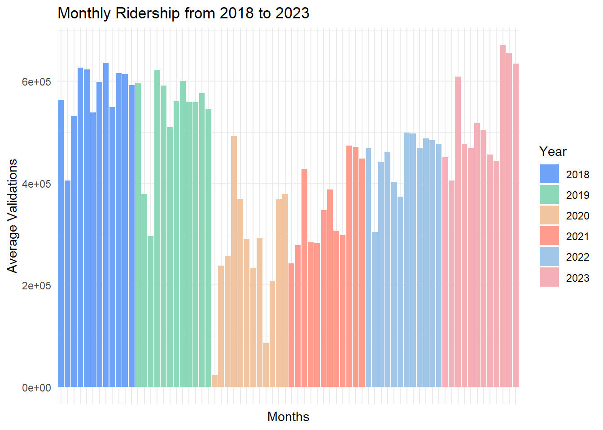
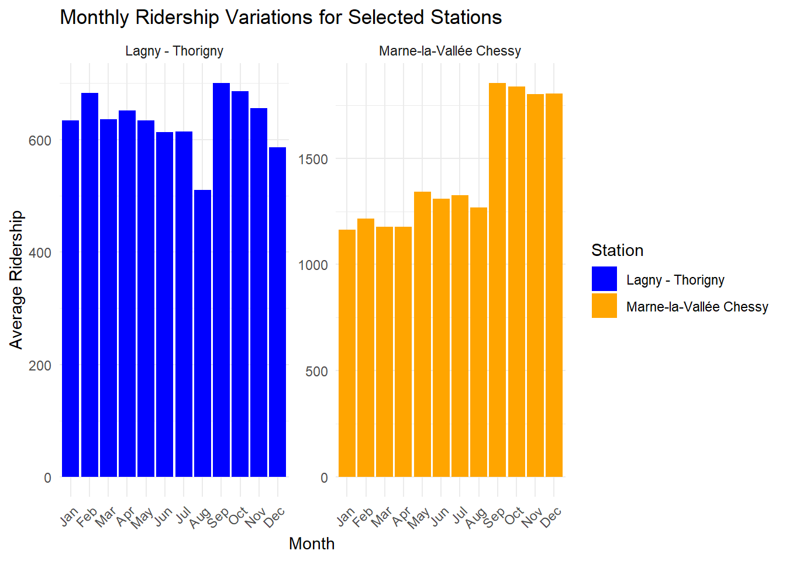
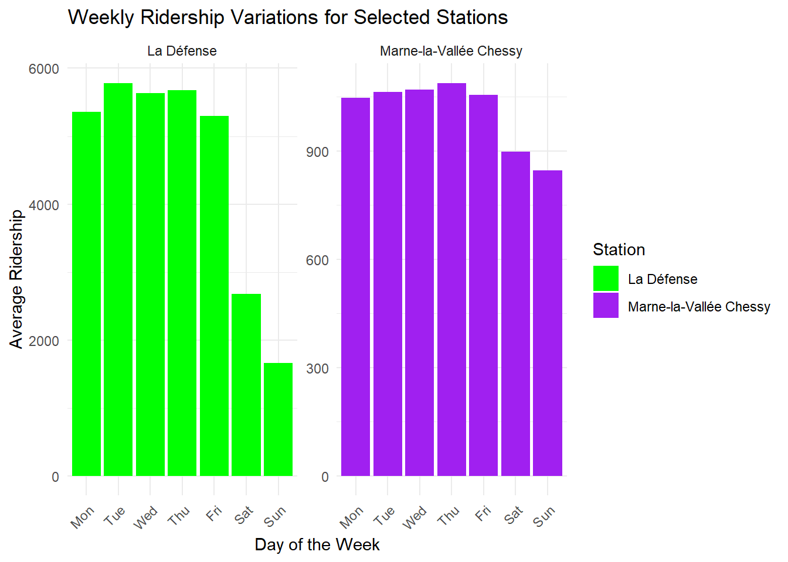

library(ggplot2)
monthly_ridership <- readRDS("./IDF_dashboard/objects/doc_monthly_ridership.rds")
seasonal_comparison <- readRDS("./IDF_dashboard/objects/doc_seasonal_comparison.rds")
weekly_frequentation <- readRDS("./IDF_dashboard/objects/doc_weekly_frequentation.rds")Analyzing and Visualizing Ridership Patterns in Île-de-France Rail Network
Project Overview
In this data analysis project, we delve into the ridership data of Île-de-France’s railway stations spanning the years 2018 to 2023. The primary objective is to analyze and visualize the ridership patterns, creating a dashboard that allows stakeholders to monitor and compare ridership against the norm. The analysis specifically focuses on discerning variations from a typical week, distinguishing between regular weeks and holiday periods.
You can explore the application online at the following address: Île-de-France Dashboard.
Or run the app locally with : shiny::runApp('IDF_dashboard')
Methodology
1. Data Collection and Cleaning
The data used for this study were sourced from the STIF open data portal. The datasets include daily validations per stop point for the first semester of 2023, historical validations from 2015 to 2022, and geographical data for stop locations. The data were gathered and compiled for the specified period starting from 2018-01-01. The cleaning process involved handling missing values, outliers, and inconsistencies. The dataset was aggregated at the “Zone d’arrêt” level defined by the ID_REFA_LDA feature, and geographical data about their locations were collected. A reproducible R script cleaning.R was provided to document all the cleaning steps.
2. Exploratory Data Analysis (EDA)
Exploratory analysis was conducted to identify overall trends and patterns in ridership. This included exploring seasonality, monthly trends, and potential outliers affecting the data.
3. Dashboard Development using Shiny
An interactive dashboard was built using the Shiny framework in R. The dashboard includes key visualizations describing overall attendance trends, weekly and monthly variations, and comparisons with the norm. Users can select a reference period and a comparison period, providing meaningful figures to highlight differences between the two selected periods, based on the day of the week. The dashboard also allows users to quickly select stations of interest using a web map, and provides key statistics on the current trend of these stations.
A second tab shows a graphical evolution of the 20 largest stations in terms of visitor numbers.
4. Statistical Methods
This project employed several statistical approaches to analyze station ridership data. Below is a summary of the key methods used in the analysis:
- Aggregation and Average Calculation
The code aggregates ridership data by day and “Zone d’arrêt” (LDA) and calculates the average number of validations for each LDA. This helps in analyzing the daily average trends.
Aggregating and averaging data is crucial for smoothing daily fluctuations and identifying overall trends.
day_avg_val_lda <- validations %>%
group_by(ID_REFA_LDA, JOUR) %>%
summarise(total_val = sum(NB_VALD), .groups = "drop") %>%
group_by(ID_REFA_LDA) %>%
summarise(avg_val = mean(total_val), .groups = "drop")- Weekly Analysis
Ridership data is analyzed by the day of the week, which helps identify specific weekly variations.
Weekly analysis is useful for understanding user behavior on different days, revealing patterns like decreased ridership on weekends or peak usage during weekdays.
weekly_stats <- validations %>%
mutate(day_of_week = weekdays(JOUR, abbreviate = TRUE)) %>%
group_by(nom_lda, day_of_week) %>%
summarise(total_val = mean(NB_VALD), .groups = "drop")- Monthly Analysis
Ridership data is also grouped by month to observe seasonal trends, such as decreases in the summer or increases during winter.
month_stats <- validations %>%
mutate(month = months(JOUR, abbreviate = TRUE)) %>%
group_by(nom_lda, month) %>%
summarise(total_val = mean(NB_VALD), .groups = "drop")- Centroids for Mapping
Centroids of the “Zones d’arrêt” polygons are calculated to get coordinates for train stations.
centroid_lda <- geo_data %>%
group_by(idrefa_lda) %>%
summarise(geometry = st_union(geometry)) %>%
st_centroid()Key Findings
Evolution of Ridership
The analysis revealed significant trends in ridership on the Ile-de-France rail network over the 2018-2023 period. The main observations are as follows:
- Overall trends: A significant increase in ridership was observed from 2018 to 2019, followed by a sharp drop in 2020 due to the COVID-19 pandemic. Attendance returned to the abnormal in 2021 and continued to rise until 2023.
ggplot(monthly_ridership, aes(x = year_month, y = total_val, fill = factor(year))) +
geom_bar(stat = "identity") +
labs(title = "Monthly Ridership from 2018 to 2023",
x = "Months",
y = "Average Validations",
fill = "Year") +
theme_minimal() +
scale_x_discrete(limits = unique(monthly_ridership$year_month)) +
scale_fill_manual(values = c("2018" = "#6fa3f7", "2019" = "#8cd8b8", "2020" = "#f1c5a2", "2021" = "#ff9c8d", "2022" = "#a1c6e7", "2023" = "#f4b0b6")) +
theme(axis.text.x = element_blank(), axis.ticks.x = element_blank())
- Seasonal variations : School vacations have a real impact on visitor numbers at certain resorts, such as “Lagny Thorigny”, which experiences a big drop in August. Some resorts are less affected by school vacations, such as “Marne-la-vallée Chessy”, thanks to its proximity to Disneyland-Paris.
ggplot(seasonal_comparison, aes(x = month, y = total_val, fill = nom_lda)) +
geom_bar(stat = "identity", position = "dodge") +
scale_fill_manual(values = c("Lagny - Thorigny" = "blue", "Marne-la-Vallée Chessy" = "orange")) +
labs(title = "Monthly Ridership Variations for Selected Stations",
x = "Month",
y = "Average Ridership",
fill = "Station") +
theme_minimal() +
theme(axis.text.x = element_text(angle = 45, hjust = 1)) +
facet_wrap(~nom_lda, scales = "free_y")
- Weekly variations : Weekday ridership has always been higher than weekend ridership. We note a slight drop on Mondays and Fridays, especially for the “La Défense” station, as we can imagine that with the arrival of telecommuting, the preferred days are Mondays and Fridays. The “Marne-la-vallée Chessy” station sees a less significant drop at weekends, again thanks to the Disneyland Paris park, which welcomes tourists all year round, most of whom have to come by public transport.
ggplot(weekly_frequentation, aes(x = day_of_week, y = total_val, fill = nom_lda)) +
geom_bar(stat = "identity", position = "dodge") +
scale_fill_manual(values = c("La Défense" = "green", "Marne-la-Vallée Chessy" = "purple")) +
labs(title = "Weekly Ridership Variations for Selected Stations",
x = "Day of the Week",
y = "Average Ridership",
fill = "Station") +
theme_minimal() +
theme(axis.text.x = element_text(angle = 45, hjust = 1)) +
facet_wrap(~nom_lda, scales = "free_y")